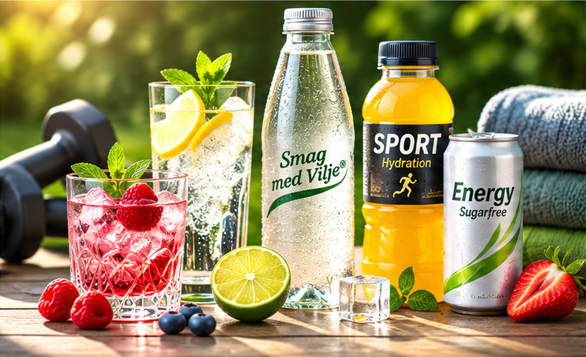

01
Udvalg med omtanke
Smag, kvalitet og særpræg skal gå hånd i hånd med markedets muligheder.
Vi vil opdage interessante drikkevarer og skabe forbindelser mellem producenter og de danske kunder, der kan få glæde af dem.
Drikkevaremarkedet udvikler sig. Nye smage, producenter og formater skaber muligheder for at tænke anderledes. Vi vil være åbne for både det velkendte og det overraskende.
Vores ambition er ikke at have flest mulige produkter. Vi vil finde dem, der har noget særligt at byde på, og introducere dem med omtanke.

Smag, kvalitet og særpræg skal gå hånd i hånd med markedets muligheder.
Vi tror på dialog, tillid og samarbejde med både producenter og kunder.
Vi bygger vores sortiment og salgsnetværk op med nysgerrighed og blik for fremtiden.
Vi ser ikke kun på, hvad der sælges i dag. Vi følger forbrugernes ønsker og internationale trends, undersøger nye smage og ønsker at udvikle drikkevarer og koncepter i samarbejde med producenter. Vi er en ny virksomhed, og netop derfor vil vi bygge vores retning på åbenhed, afprøvning og læring.
Se vores tilgang til smag og udvikling ↗Vi vil gerne høre fra producenter, der ser potentiale i det danske marked.
Lad os tale sammen